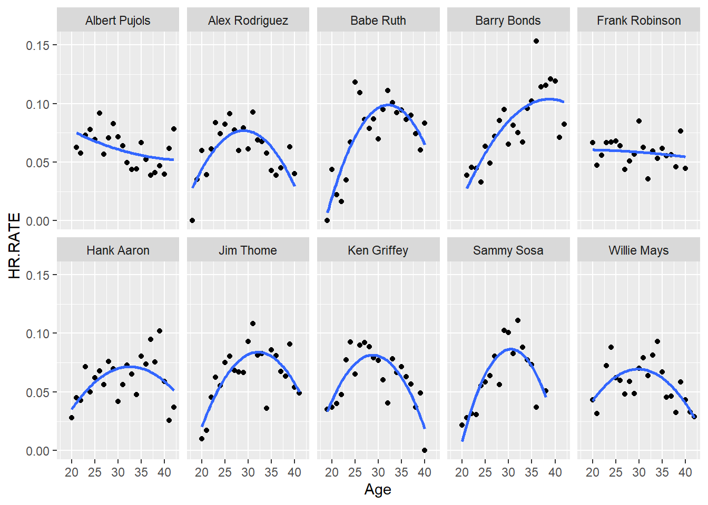

library(tidyverse)
library(Lahman)
library(knitr)MA388 Sabermetrics: Lesson 19
Comparing Peak Trajectories - Part II
Comparing Trajectories of Home Run Hitters
- Find the ten players in baseball history who have hit the most career home runs.
Top10 <- Batting |>
summarize(totalHR = sum(HR), .by ='playerID') |>
slice_max(totalHR,n=10) |>
inner_join(People, by = "playerID") |>
mutate(label = str_c(nameFirst,nameLast,sep=' ')) |>
relocate(label,totalHR)
Top10 |>
select(label, totalHR, debut) |>
kable()| label | totalHR | debut |
|---|---|---|
| Barry Bonds | 762 | 1986-05-30 |
| Hank Aaron | 755 | 1954-04-13 |
| Babe Ruth | 714 | 1914-07-11 |
| Albert Pujols | 703 | 2001-04-02 |
| Alex Rodriguez | 696 | 1994-07-08 |
| Willie Mays | 660 | 1951-05-25 |
| Ken Griffey | 630 | 1989-04-03 |
| Jim Thome | 612 | 1991-09-04 |
| Sammy Sosa | 609 | 1989-06-16 |
| Frank Robinson | 586 | 1956-04-17 |
- Fit quadratic functions to the home run rates of the ten players, where HR.RATE = HR / AB. Display the fitted trajectories in a single figure.
top10_stats <- Batting |>
filter(playerID %in% Top10$playerID) |>
summarize(HR.RATE = sum(HR)/sum(AB),.by=c('playerID','yearID')) |>
inner_join(People, by = "playerID") |>
mutate(birthyear = ifelse(birthMonth >= 7,
birthYear + 1, birthYear),
label = str_c(nameFirst,nameLast,sep=' '),
Age = yearID - birthyear)
top10_stats |>
ggplot(aes(x = Age, y = HR.RATE)) +
geom_point() +
geom_smooth(method = "lm", formula = y~poly(x,2), se = FALSE) +
facet_wrap(~label, ncol = 5)
- On the basis of your work, which player had the highest estimated home run rate at his peak? Which player among the ten had the smallest peak home run rate?
top10_model <- function(this_playerID){
this_player_stats <- top10_stats |>
filter(playerID == this_playerID)
fit <- lm(HR.RATE ~ I(Age - 30) + I((Age - 30)^2), data = this_player_stats)
A <- coef(fit)[1]
B <- coef(fit)[2]
C <- coef(fit)[3]
# Return all the stuff you just obtained.
tibble(label = head(this_player_stats$label,1), playerID = this_playerID, A, B, C,
age.max = 30 - B / C / 2,
max = A - B^2 / C / 4)
}
# Map the model function to the list of playerIDs you obtained in 1.
HR_results <- map_df(Top10$playerID,top10_model)
HR_results |>
kable()| label | playerID | A | B | C | age.max | max |
|---|---|---|---|---|---|---|
| Barry Bonds | bondsba01 | 0.0851324 | 0.0042375 | -0.0002401 | 38.82412 | 0.1038285 |
| Hank Aaron | aaronha01 | 0.0700492 | 0.0011897 | -0.0002294 | 32.59352 | 0.0715920 |
| Babe Ruth | ruthba01 | 0.0965013 | 0.0022230 | -0.0005377 | 32.06727 | 0.0987990 |
| Albert Pujols | pujolal01 | 0.0610317 | -0.0012091 | 0.0000387 | 45.60271 | 0.0515987 |
| Alex Rodriguez | rodrial01 | 0.0766162 | -0.0007482 | -0.0003996 | 29.06393 | 0.0769664 |
| Willie Mays | mayswi01 | 0.0695671 | -0.0000923 | -0.0002813 | 29.83585 | 0.0695747 |
| Ken Griffey | griffke02 | 0.0808547 | -0.0012131 | -0.0005022 | 28.79225 | 0.0815873 |
| Jim Thome | thomeji01 | 0.0820880 | 0.0018386 | -0.0004322 | 32.12711 | 0.0840435 |
| Sammy Sosa | sosasa01 | 0.0864312 | 0.0006562 | -0.0007198 | 30.45580 | 0.0865808 |
| Frank Robinson | robinfr02 | 0.0586096 | -0.0002988 | -0.0000104 | 15.61690 | 0.0607582 |
# Highest estimated max HR rate:
HR_results |>
slice_max(max)# A tibble: 1 × 7
label playerID A B C age.max max
<chr> <chr> <dbl> <dbl> <dbl> <dbl> <dbl>
1 Barry Bonds bondsba01 0.0851 0.00424 -0.000240 38.8 0.104# Lowest estimated max HR rate:
HR_results |>
slice_min(max) # A tibble: 1 × 7
label playerID A B C age.max max
<chr> <chr> <dbl> <dbl> <dbl> <dbl> <dbl>
1 Albert Pujols pujolal01 0.0610 -0.00121 0.0000387 45.6 0.0516Your answer here.
- Do any of the players have unusual career trajectory shapes? Is there any possible explanation for these unusual shapes?
Your answer here.